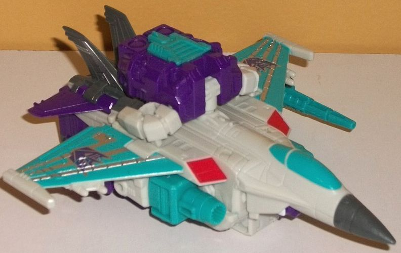
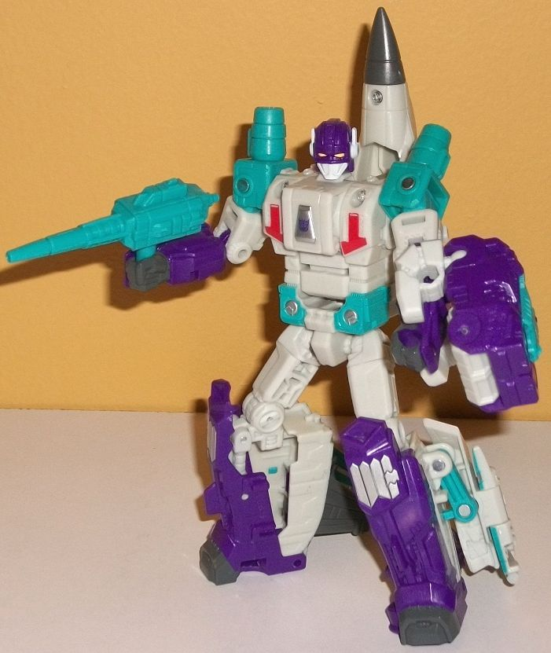
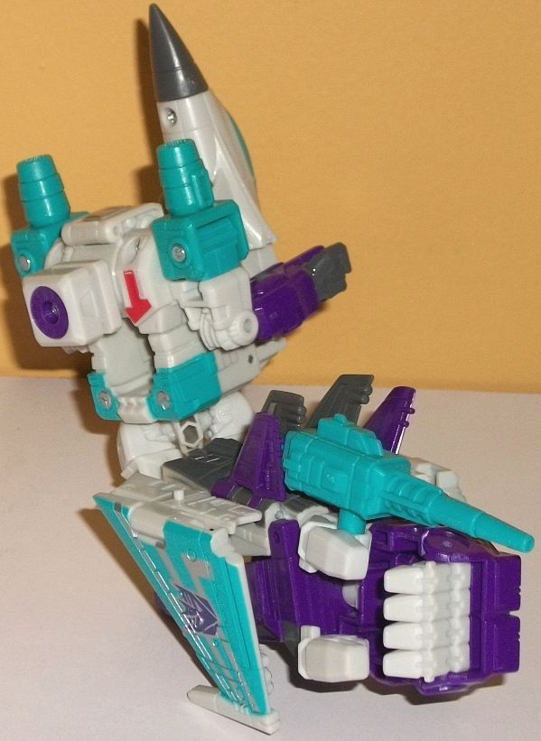
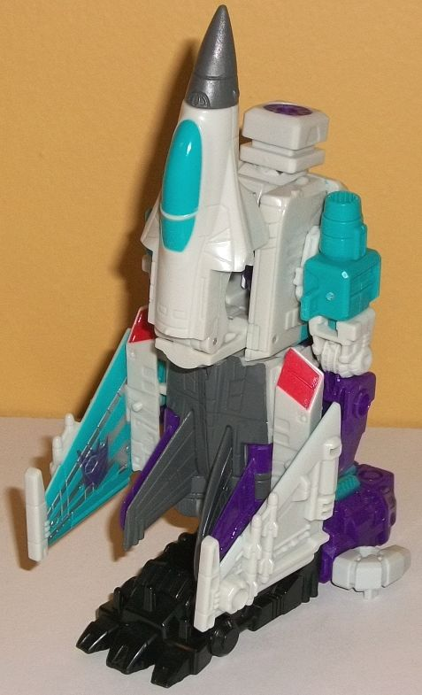

Allegiance
: Decepticon
Size
: Deluxe
Difficulty of Transformation to Robot
:
Easy
Difficulty of Transformation to Leg
:
Very Easy
Difficulty of Transformation to Arm:
Very Easy
Color Scheme
: Off-white, royal purple,
light pale greenish blue, and some silver, yellow, light red, and dark
gray
Rating
: 8.0
(NOTE: Because this is a repaint, this is not a full-blown review. This mainly covers any changes made to the mold and the color scheme, and merely compares it to Combiner Wars Skydive. For a review on the mold itself, read the review of Combiner Wars Skydive here .)


Dreadwind is a remold
of Skydive, but he's a somewhat extensive remold. In jet mode, for the
most part this isn't all that apparent-- the nosecone and body of the jet
are the same mold as Skydive's, along with the rear section and tailfins.
What IS new mold-wise are the wings, which are a bit larger than Skydive's
proportionally. They've got little missile pods molded onto the bottom
of them, which is a pretty nifty detail, and each wing has a port molded
on the underside of it (near the bottom tip), similar to Skydive. The other
obvious mold change in this mode are the new robot arms-- granted, they're
not INTENDED to be used for this mode, but this design has the arms just
pretty obviously on the side of the jet, partially underneath the wings,
so there they are. The shoulders form barreled cannons, which look cooler
than Skydive's intake vents. The middle portion of the arms is the same,
while the lower arms are new, with smaller, slimmer fists and slightly
more angular details overall. As for the color scheme in this mode it's
fairly light. Most of the jet mode is either an off-white shade or-- in
the case of the wings, shoulders, and cockpit-- a light pale greenish blue.
These two colors by themselves are a bit too light of a scheme to work
by themselves, and color-wise the center portion and nosecone don't look
all that great as a result, though it's not downright awful. (Certainly
very late '80s, though.) There's some dark gray on the nosecone and on
the upper tailfins and most of the rear portion, which complements the
off-white while also being a nice contrast, so there's that. What I really
like is the royal purple, which is just a fantastic color, but is only
used on the rear tailfins and the lower arms. The purple really goes well
with every color-- I wish it was used more... but then again, if it was
he'd be awfully similar color-wise to Blackwing. There's some nifty silver
stripes on the greenish blue wings which-- along with the Decepticon symbols--
help make those parts look pretty cool. He's also got a touch of light
red on the sides, above the shoulders. Dreadwind comes with a long-barreled
cannon with a tiny tip that's colored greenish blue and looks pretty neat
for a new piece of weaponry. Of course, he also comes with a piece of Prime
Armor, which can fit a Prime Master in it if you take off the middle portion.
It doesn't really fit with this mode, though, being an ugly chunk of plastic
on top of the mode and fitting in even worse if you try to fit it under
either wing. Using purple and bluish-green for the center portion of the
Prime armor while making the digits off-white was a good choice, though,
and color-wise the Prime Armor looks neat. Dreadwind also has two little
pegs on the top of this mode for Prime/Titan Masters to stand on, near
where each wing meets the main body. Also, Dreadwind can combine with Blackwing
in jet mode to form Dreadwing, but given that Blackwing came out last,
I'll review the combined form with Blackwing.
Dreadwind's transformation
is pretty much identical to Skydive's, except that the main wings fold
down onto his lower legs and then fold back, as opposed to just folding
back from his main body. Out of the two options, I like this one slightly
more; Dreadwing doesn't have as much "stuff" behind his back now-- just
the nosecone-- and although the large wings do stick out a fair bit behind
his lower legs and are pretty obvious, they also help stabilize him more.
So they're still a negative, but a pretty minor one. In this mode the other
new mold changes are apparent-- the mold details on the body are different,
with some upside-down angular "T" sections on his chest that are painted
light red, and some circular bolt-like details on his waist that are painted
silver with greenish blue paint around them. There's also a small addition
to the combiner peg/chest, which involves a little silver-painted triangular
bit with a Decepticon symbol on it that can fold open to reveal a peg hole.
You can use this to have Dreadwind wear the Prime armor on his chest--
an option I always find looks odd, but your mileage may vary-- but was
mostly included here to allow Dreadwind to combine with Blackwing in vehicle
mode. Of course, the headsculpt is new, replicating Dreadwind's G1 head
quite well while modernizing the proportions a fair bit. He's got a relatively
small white chin with no mouth-- just an enlarged chinguard-- two small
white antennae on the sides, and otherwise a fairly round, purple head
with a small protrusion in the center and two narrowed, yellow eyes. It
looks pretty solid overall, and definitely eeevil. That wonderful royal
purple is more apparent in this mode, being present on the head, lower
arms, and lower legs. It helps "average out" the color scheme between the
dark and light more, and makes this mode look a bit better color-wise.
The robot legs (minus the addition of the extra wings) are entirely the
same as Skydive, and both Dreadwind and Skydive share the same articulation
in this mode.


Given that the general
structure of the toy is the same, the arm mode is fairly similar to Skydive's
as well. The nosecone, the upper body, and the arms form the shoulder,
while the robot legs form the elbow and lower arm. To specifically address
the relevant changes (beyond color), the new robot arms peg into the sides
of the body, backwards from their robot mode position. This doesn't look
quite as good as Skydive's robot arms here-- with Skydive, his arms rotated
up, making them sit a bit more flush with the nosecone between them from
a silhouette perspective. However, even with Dreadwing's new configuration
here, they're fairly obvious, but not mode-ruining by any means. The other
major difference is the addition of the main jet wings on the sides of
the lower arms compared to the upper arms from Skydive. The wings fold
against said lower arms, so they don't stick out too much, and the added
mass helps the lower arm look a bit beefier and pack a bit more punch--
this is definitely a positive change, in my opinion. Obviously, this version
has the PotP "two-thumbed" hand as opposed to the Combiner Wars version
of the hand with Skydive, but other than that the articulation of the two
arm modes is the same.
For Dreadwind's leg
mode, as with Skydive it's essentially the jet mode with the combiner peg
flipped out on top as opposed to the robot head; the jet nosecone flipped
back; and the main wings folded down and then out, with the PotP Prime
Armor piece attached to the foot piece from a voyager to form the full
foot underneath. For the most part, there's not much to say about the new
structure-- just as with Skydive, it's mostly a fairly square lower leg,
with the cockpit forming a kneecap and the robot arms pretty visible on
the sides. The only major difference is that all the wings are near the
bottom of the foot now, as opposed to the main wings jutting out from the
middle of the foot mode with Skydive. I find this a negative change, as
it puts a bit too much mass near the bottom of the foot, as opposed to
Skydive's configuration where the mass is more evenly distributed. The
large wings tend to stick out just a bit too far, and don't mesh very well
with the PotP foot pieces.
PotP Dreadwind is a pretty decent remold of Skydive, and I do like the way the wings fold down onto the legs. This combined with some of the other new parts make his robot mode, jet mode, and arm mode look better sculpt-wise than Skydive, though it off-balances the leg mode slightly more. The color scheme, though very Decepticon-y, isn't quite as good as Skydive's, however, with too much light coloration. If you want to make Dreadwing you definitely need to get him, but by himself he's just very "been there, done that" by this point in terms of his overall structure, and this (general) design's been done in better colors by now.
Review by Beastbot